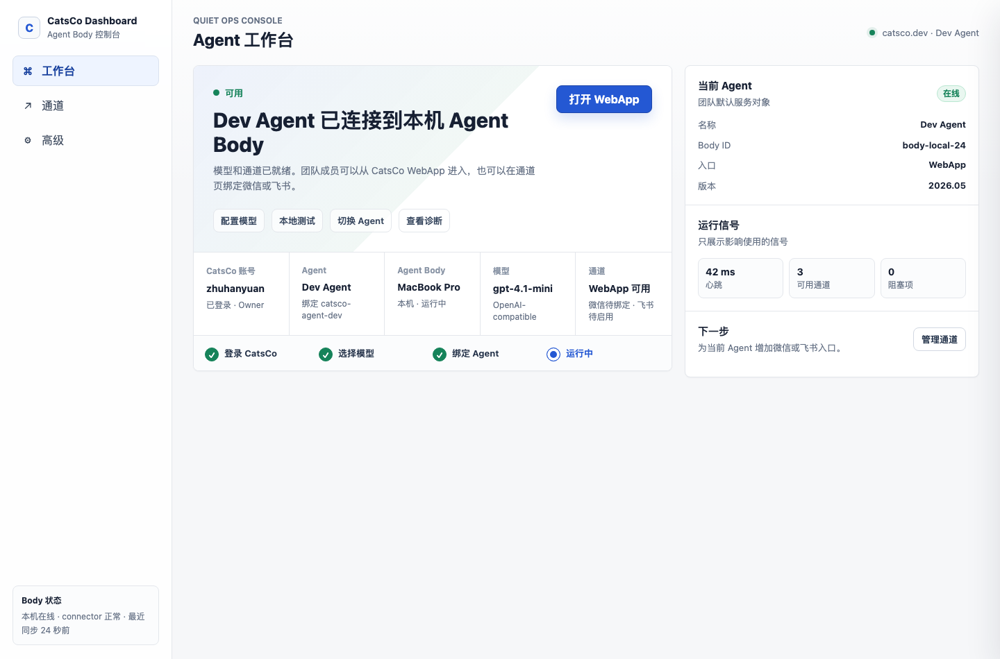
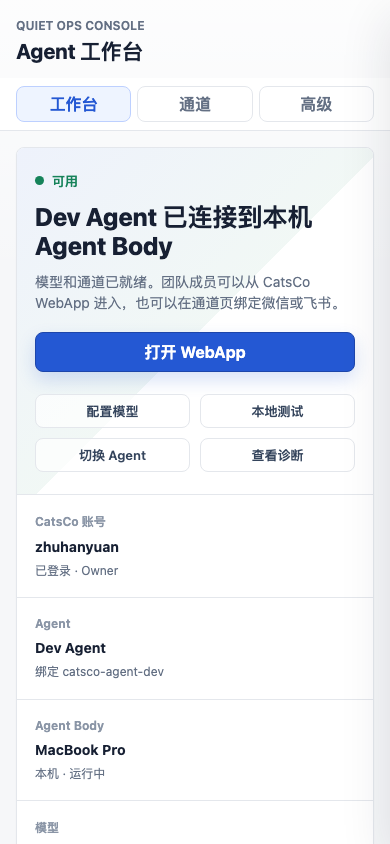
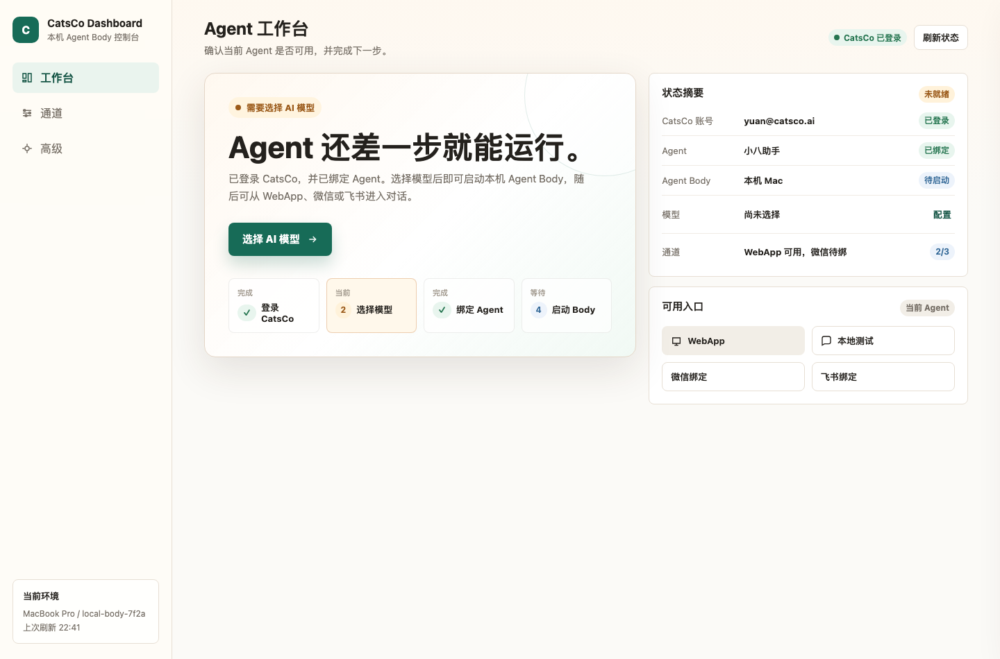
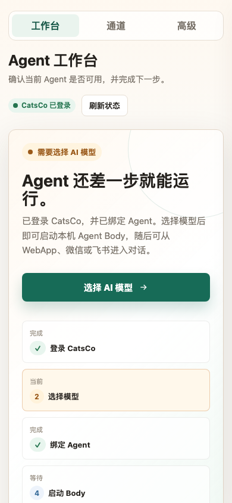
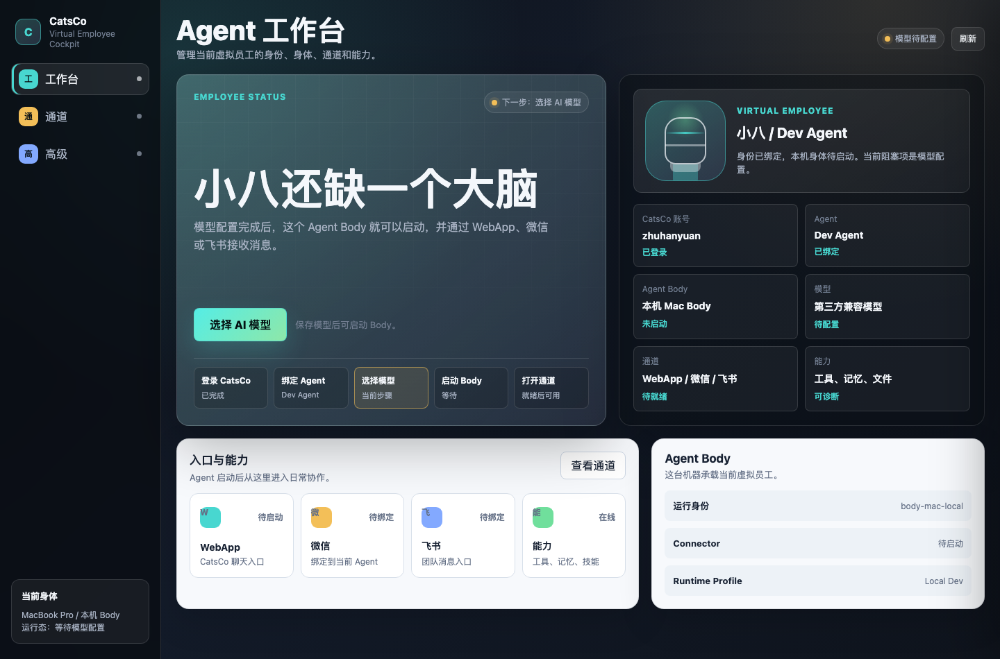
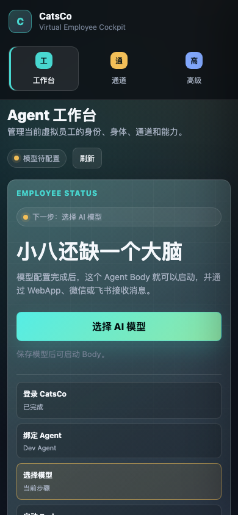
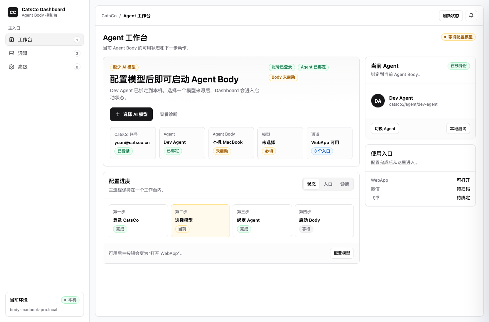
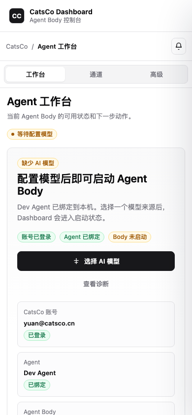

CatsCo Dashboard 四版视觉方案评审
这次不再只讨论功能结构，而是比较四种完整视觉方向。结论是：以 shadcn app shell 作为落地底座，吸收 B 版的亲和文案、A 版的运维清晰度、C 版的“虚拟员工身份”表达。
推荐方向
采用 D 版作为主设计语言：黑白灰语义 token、清晰边框、低饱和状态 Badge、Sidebar + inset 工作区、模型 Sheet。它最像可以直接工程化落地的真实 Dashboard。
第一版落地目标
不是做漂亮概念页，而是把现有 Dashboard 变成一个普通用户能用、工程上能维护的 Agent Body 控制台。
评分总览
| 版本 | 风格 | 最强点 | 主要问题 | 建议 |
|---|---|---|---|---|
| A | Quiet Ops Console | 信息密度合适，状态和诊断清楚，适合高级区。 | 略偏运维工具，普通用户的情绪阻力稍高。 | 保留高级诊断和状态摘要思路。 |
| B | Warm Product Workbench | 主状态最容易懂，按钮和流程很亲和。 | 暖色背景偏重，长期作为工具可能不够克制。 | 吸收文案、流程卡和空白感。 |
| C | Virtual Employee Cockpit | 最能表达“虚拟员工”的身份和身体概念。 | 深色驾驶舱太重，日常工具使用成本高。 | 只吸收身份卡、身体/通道/能力的语义。 |
| D | shadcn App Shell | 最可落地，结构规整，组件语言清晰。 | 略标准化，需要加一点 CatsCo 自己的身份感。 | 作为最终界面底座。 |
A：专业运维控制台
A 版像一个成熟 SaaS 控制台。优点是用户能很快看到 Agent、Body、模型、通道状态；缺点是“控制台感”更强，少了一点普通用户可亲近性。


- 可吸收：右侧当前 Agent 摘要、运行信号、高级诊断的表达方式。
- 需避免：首屏略像运维后台，普通用户可能觉得这是给开发者看的。
B：清爽产品化工作台
B 版在普通用户理解上最好，“Agent 还差一步就能运行”非常直接。它的问题是暖色和柔和卡片太多，长期工具界面可能不够稳。


- 可吸收：主标题文案、流程步骤、按钮层级、移动端单列结构。
- 需避免：整套暖色底色不适合作为长期生产力工具主色。
C：虚拟员工协作驾驶舱
C 版最能表达“Agent 是虚拟员工，有身份、身体、通道、能力”。但深色驾驶舱适合作为品牌概念，不适合作为每天打开的本地 Dashboard。


- 可吸收：虚拟员工身份卡、身体/通道/能力三件事的语义结构。
- 需避免：深色大驾驶舱、过强装饰网格、太大的概念标题。
D：shadcn App Shell
D 版最适合作为新版 Dashboard 的基础。它不像概念页，像真实 app：Sidebar、Card、Badge、Sheet、Tabs 的层级很明确，黑白灰语义 token 也最方便落地。


- 采用：左侧 Sidebar + 主工作区 + 右侧当前 Agent 摘要。
- 采用：模型配置用 Sheet，而不是主页面。
- 需要补强：加一点 C 版的“虚拟员工身份”表达，避免太像通用后台模板。
推荐融合方案
最终风格
以 D 版 shadcn app shell 为骨架：黑白灰、8px 圆角、清晰边框、低饱和 Badge、明确 Card composition。视觉上更像生产力工具，而不是营销页或开发者调试页。
要吸收的部分
B 的“还差一步”文案和流程感，A 的诊断分组，C 的虚拟员工身份卡。三者都只作为局部能力，不改变 D 的整体语言。
配置模型后即可启动 Agent Body
Dev Agent 已绑定到本机。选择一个模型来源后，Dashboard 会进入启动状态。
当前 Agent
落地顺序
1. App Shell
主导航改为工作台 / 通道 / 高级。移除模型主入口。
2. 工作台
一个主状态、一个主按钮、右侧 Agent 摘要。
3. 模型 Sheet
复用现有保存接口，把模型配置从页面改成侧抽屉。
4. 高级收纳
Runtime、.env、readiness、connector 和实验功能进入高级。
文件索引
version-a-ops-console.html
version-b-product-workbench.html
version-c-employee-cockpit.html
version-d-shadcn-app-shell.html
../assets/dashboard-redesign-concepts/*.png